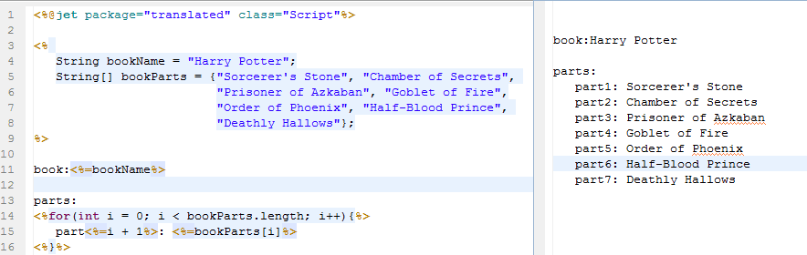

Jmr采用Eclipse Jet做为模板，它是一个和Jsp类似的模板引擎。
本章学习Jet的基础语法，更详细请内容请阅读本章的子章节。
脚本程序可以包含任意量的Java语句、变量、方法或表达式，只要它们在脚本语言中是有效的。
和Jsp的<% %>的一样。
脚本的语法格式：
<% 代码片段 %>
表达式中包含的脚本语言表达式，先被转化成String，然后插入到表达式出现的地方。
表达式元素中可以包含任何符合Java语言规范的表达式，但是不能使用分号来结束表达式。
和Jsp的<%= %>的一样。
表达式的语法格式：
<%=表达式%>
程序示例：

声明语句可以声明一个或多个变量、方法；相当于类变量和类方法。
和Jsp的<%! %>的一样。
声明的语法格式：
<%! declaration; [ declaration; ]+ ... %>
程序示例：
注释块中的内容会被屏蔽，不会被用于生成。可用于单行注释，也可以多行注释。
注释的语法格式：
<%-- 注释内容 --%>
Jet指令用来设置整个模板页面相关的属性，如编译指令和导入指令。
模板文件第一行都有编译指令，模板会被自动编译成Java类，原理和Jsp编译成Java Class类似。
编译类指定了这个Java Class的包名和类名，开发者不需要关心具体的编译类。
编译指令的语法格式：
<%@jet package="包名" class="类名" ... %>
导入要使用的Java类，Jet模板所在项目的依赖都可以导入。
导入指令的语法格式：
<%@jet imports="..."%>
比如导入List

可以指定具体“包名.类名”，也可以指定“包名.*”；写法和Jsp的<%@ page import="..." %>用法一样。